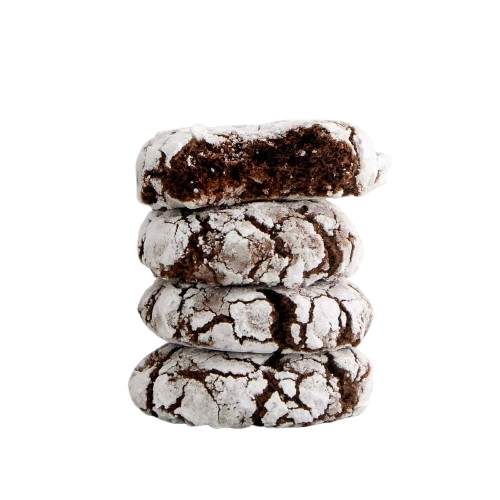

Gabrielle Joanna L. Pascual | 9 Rubidium | 08/26/2025
My Favorite Recipe
I love this Chocolate Crinkle Cookies recipe because they are my favorite dessert and/or snack! It is easy to make, and I love its delicious😋, chewy😛, and rich😝 chocolate😜 fudge🤪 center🍪!!!
Ingredients
- 1 cup (100 g) unsweetened cocoa powder
- 1¾ cups (350 g) granulated sugar
- ½ cup (120 mL) vegetable oil
- 4 large eggs, room temperature
- 2 teaspoons vanilla extract
- 2 cups (240 g) all-purpose flour
- 2 teaspoons baking powder
- ¾ teaspoon salt
- 1 cup (120 g) powdered sugar
Instructions
- In a large bowl (or stand mixer with the paddle attachment), combine the granulated sugar, cocoa powder, and oil. Beat on medium speed until well blended and shiny.
- Add the eggs one at a time, beating until fully incorporated. Then beat in the vanilla extract.
- In a separate bowl, whisk together the flour, baking powder, and salt.
- Add these dry ingredients to the wet mixture, mixing on low just until fully combined.
- Cover the dough and refrigerate for at least 4 hours (or overnight).
- Preheat your oven to 350 °F (175 °C). Using a cookie scoop or tablespoon, form dough into small balls (~1 inch). Roll each ball in powdered sugar to coat evenly.
- Place the sugar-coated dough balls about 2 inches apart on parchment-lined baking sheets. Bake for 10-12 minutes, until the edges are set and the centers look slightly wet.
- Allow cookies to cool on the baking sheets for a few minutes, then transfer to a wire rack to cool completely.
Picture
